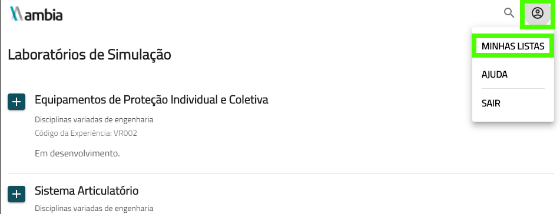
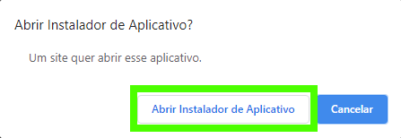
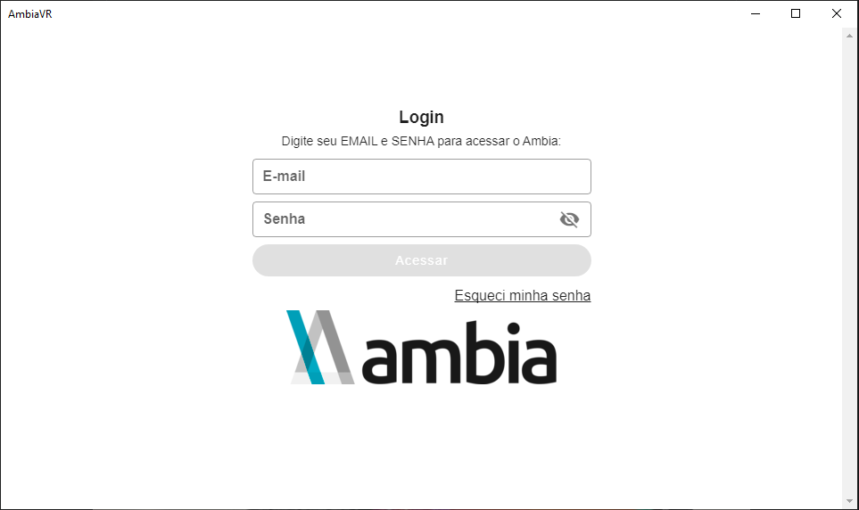

Instalando Simuladores no PC
Este guia tem o objetivo de auxiliar a instalação do Ambia Labs na plataforma PC. O guia é primariamente estinado à administradores de sistemas.
Requisitos técnicos
A seguir são listados os requisitos técnicos para realizar a instalação do Simulador
- Informações de login para o [catálogo] [https://catalogo.imersys.com] (Fornecido via email pela Imersys)
- Uma máquina com sistema operacional Windows 10
- 2GB de espaço disponível para instalação
Guia de instalação
1º Passo: Acessando o Catálogo
Para encontrar o Instalador do Simulador é necessário que o usuário vá ao [catálogo][https://catalogo.imersys.com/home] da Imersys e entre com as informações de login.

2º Passo: Navegando pelas experiências de Simuladores
Em seguida o usuário deve selecionar Laboratórios de Simulação para escolher as experiências que deseja usar no Simulador.

Aqui os usuários tem uma diversidade de Laboratórios de Simulação para escolher. Nessa etapa o usuário pode escolher apenas as experiências que ele deseja baixar. Basta selecioná-las no botão com ícone +.

Em seguida o usuário escolhe qual lista o laboratório de simulação ficará. O usuário também pode criar novas listas facilitar a organização.

3º Passo: Baixando o Instalador do Simulador
Para baixar o instalador o usuário deve, no campo superior direito da tela, selecionar o seu perfil e clicar em Minhas Listas.

O usuário deve selecionar em seguida a Lista na qual os Laboratórios de Simulação foram adicionados. Para baixar, basta clicar no ícone de download.

4º Passo: Instalando o Simulador
Uma janela no navegador irá aparecer com a opção de abrir o instalador de aplicativo. O usuário deverá então abrir o instalador com essa janela.

Uma janela com as opções de instalação surge, na qual o usuário deve iniciar a instalação. Após iniciar a instalação o usuário deve esperar o download terminar.

E assim foi concluída a instalação do Simulador na máquina. Agora basta apenas abrir o programa.
Testando a instalação
Para testar o Simulador, o usuário deve executar, na sua máquina, o aplicativo AmbiaVR. Ao iniciar, o usuário terá que entrar com as informações de login.

Ao iniciar, o AmbiaVR irá procurar por atualizações, basta esperar e o usuário agora pode explorar os Laboratórios de Simulação a vontade.
Eventuais problemas
Habilitando instalação de aplicativos de terceiros no Windows
Em versões não atualizadas do Windows, é possível a instalação ser bloqueada pelo sistema operacional por razão de ser de um aplicativo de fora da Microsoft Store por padrão.Essa Exceção ocorreu na versão 1903 do Windows 10 e possivelmente também pode ocorrer em versões anteriores. Nesse caso o usuário precisa habilitar o sideload de Apps nas configurações. Se esse for o caso, basta clicar em habilitar o modo sideload de Apps na janela com o erro de falha na instalação. O Windows abrirá uma janela pedindo confirmação se o usuário pretende abrir as configurações. Nas configurações o usuário deve selecionar sideload de Apps.


Após habilitar o modo de sideload de Apps nas configurações o usuário deve tentar baixar novamente o instalador.